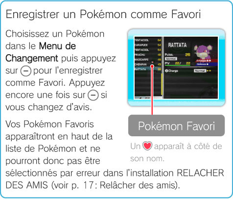

11 |
Menu de Changement |
 |
|
Explication du Menu de Changement Appuyer sur Les informations affichées dans le Menu de Changement diffèrent selon l’endroit où vous vous trouvez. ・Pour davantage d’informations sur le changement de Pokémon, consultez les pages du Terminal (p. 12: Changer de Pokémon), des Stages (p. 13: Changer de Pokémon) et de la Bataille Royale (p. 14: Changement de Pokémon). ・Si le nombre de Pokémon stockés dans la console Wii dépasse les 1001, libérez-en quelques-uns dans l’installation RELACHER DES AMIS (voir p. 17: Relâcher des amis).
Affichage dans le Terminal
Affichage dans un Stage ou durant une Bataille Royale
Lire l’écran d’information des Pokémon
Note: il s’agit de l’écran tel qu’il apparaît dans le Terminal.
Puissance Puissance globale de votre Pokémon.
Type du Pokémon Montre le type du Pokémon, par exemple . Il existe de nombreux types différents, et certains Pokémon peuvent avoir 2 types en même temps.
PV (Points de vie) Nombre de PV actuel de votre Pokémon / nombre de PV maximum. Diminue lorsqu’un Pokémon subit des dégâts. Lorsque le chiffre descend à 0, le Pokémon tombe à terre et vous ne pouvez plus le contrôler. En revenant au Terminal, tous vos Pokémon retrouvent automatiquement leur nombre maximum de PV.
Information sur les capacités Affiche les informations sur les capacités que votre Pokémon connaît. Les Pokémon peuvent connaître jusqu’à 2 capacités en même temps. Un bouton ( ou Certains Pokémon ne connaissent qu’une seule capacité. Si vous appuyez sur le bouton qui n’est pas relié à une capacité, le Pokémon se retournera vers vous. Dans ce jeu, les Pokémon ne gagnent pas de niveaux ni n’apprennent de capacités en se battant. Pour leur enseigner de nouvelles capacités, allez dans le Terminal et utilisez l’installation APPRENDRE CAPACITE (voir p. 12: Utiliser les installations).
Attaque/Défense Indique l’Attaque et la Défense du Pokémon. Plus il y a de ○, plus l’Attaque et/ou la Défense sont élevées. Note: ne s’affiche pas dans un Stage ou durant une Bataille Royale.
Filtrer ou Réarranger les Pokémon Dans le Terminal, appuyez sur
Note: vous ne pouvez pas le faire dans un Stage ou durant une Bataille Royale.
 |
 ouvre le Menu de Changement. Vous pouvez choisir votre Pokémon dans la liste, ou consulter ses caractéristiques.
ouvre le Menu de Changement. Vous pouvez choisir votre Pokémon dans la liste, ou consulter ses caractéristiques.
 par exemple) est affiché à gauche de leur nom pour vous permettre de les distinguer.
par exemple) est affiché à gauche de leur nom pour vous permettre de les distinguer.
 dans le Menu de Changement pour faire apparaître les 3 options suivantes.
dans le Menu de Changement pour faire apparaître les 3 options suivantes.
 |
 |
 |